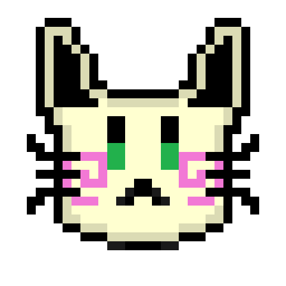
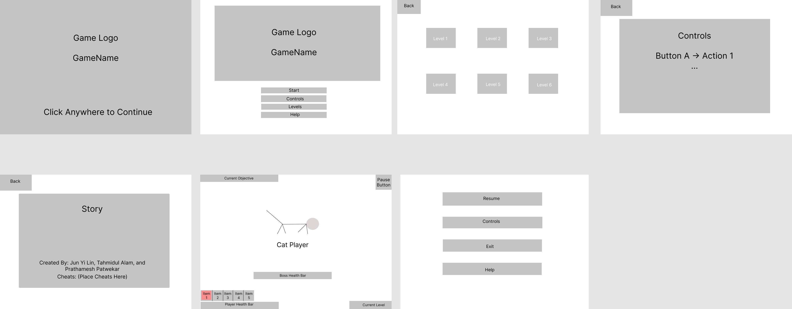

Don’t Steal Meow Food
A Game For Wolfie2D
Copyright 2022 Jun Yi Lin, Tahmidul Alam, and Prathamesh Patwekar
Introduction
“No way! These raccoons stole my food again ugh!”, were the words the kitty named Vanilla said when the raccoons stole all the food she had saved up for summer. In our game, “Don’t Steal Meow Food”, you must help Vanilla to get her revenge against the raccoons. Don’t Steal Meow Food is a 2D, single player, top-down game designed by a team of three university students: Prathamesh Patwekar, Tahmidul Alam, Jun Yi Lin, from the academic course, CSE 380, offered by Stony Brook University. The game employs sprite based animations, collision detection between collidable entities, use of a tiled map, use of artificial intelligence and use of other 2D game design techniques.
Technology
Don't Steal Meow Food will be developed for the web platform using the Wolfie2D game engine. We will be using Tiled to make the game level. We will also use FL Studio, Audacity, Chiptone, and other musical softwares for music/sound production. We will use other applications for player construction, animation, and effects.
Background Story
Vanilla the cat had been living peacefully her entire life, but recently a gang of raccoons invaded her living space and stole all her cat food. Vanilla decides to take revenge on the raccoons and get her food back.
Objective
Vanilla needs to sneak into areas controlled by raccoons and collect as much stolen cat food as possible and defeat the raccoon’s leader to drive the raccoons out of her living space.
Gameplay
The game will be a top-down game with six different levels. Player’s goal is to explore the map and finish the objective of each level.
The objectives include stealing information about raccoon’ base, collecting stoten car food, and defeating special enemies.
Vanilla have to deal with the raccoons that poraling the map. They will try to battle Vanilla if they spot her. However, Vanilla has the ability to assassinate the enemy if she can get on the enemy’s back. She can also choose to take down the enemies that spot her before they call for help.
Vanilla can find a variety of items in the raccoon's base that can help her complete her mission. Including food that heals her, rocks that distract enemies, and guns that can take down enemies in distance.
The leaders of raccoons are a lot stronger than normal raccoons and can’t be assassinated. The only way to defeat them is face to face combat.
Characters
The characters in this game are categorized into cats and raccoons. The main character is a cat and the enemies are raccoons.
Controls
This game is playable with the use of a mouse and a keyboard. The following are the controls that are used to control the cat player:
Keyboard Controls
- W - Move the cat player upwards
- A - Move the cat player towards the left
- S - Move the cat player downwards
- D - Move the cat player towards the right
- 1 - Use item in inventory location 1
- 2 - Use item in inventory location 2
- 3 - Use item in inventory location 3
- 4 - Use item in inventory location 4
- 5 - Use item in inventory location 5
Mouse Controls
- Left Click - To Attack
- Right Click - Special Attack/ Item
Note: The player can only use one inventory item at a time, so pressing different numbers will switch the item being used.
Graphical User Interface (GUI)

In our GUI Models, we have (as shown above):
- Splash Screen: There is our game logo and a “Click Anywhere to Continue” text that prompts the player to click to move past the splash screen. When clicked, the player gets redirected to the main menu where they are given different options to choose from.
- Main Menu: The main menu has the following option: If the player is new, then the player will be entered in level 1 (a new game). Otherwise, the player will continue from where they have left off previously.
- Controls: This button will redirect the player to a new screen where they can view the controls of the game. They can go back to the main menu whenever they wish.
- Levels: After pressing this button, the screen will show all the levels (levels 1 to 6) in the game. If the player has not finished a level or multiple levels, then a lock icon will appear above the levels. Otherwise, a text with a blurred map background will appear indicating that the player has completed the level. If they wish to replay a level, they can. If the player wishes to go back to the main menu, they can press the back button.
- Help: This button will redirect the player to the “help” screen. Here, the player can read the overall background story. This page will also have the names of the creators of the game as well as cheat codes for the game.
-
In-Game GUI: The in-game GUI will have the following components:
- Current Objective: There will be a text on the upper left corner displaying the current objective of this level.
- Button: When pressed, the game will pause.
- Inventory Slots: These slots are used for carrying weapons, health packs, and other usable items. The players can switch between slots and it will be highlighted at the equipped slot.
- Player Health Bar: This bar shows the player’s current and total health.
- Boss Health Bar: (Only during the last level) This bar shows the Boss enemy’s current and total health.
- Current Level Text: The text of the current level being played.
Sounds and Music
All music and sounds will be original. Using FL Studio and other audio editing programs, the following will be implemented:
- Sound Effects
- Shooting
- Walking
- Using Items
- Player Death
- Music
- Levels 1 to 6
Artwork
All the artwork in the game including the animated and non-animated sprites, the tile maps will be original.
The animated sprites will be produced using Piskel.